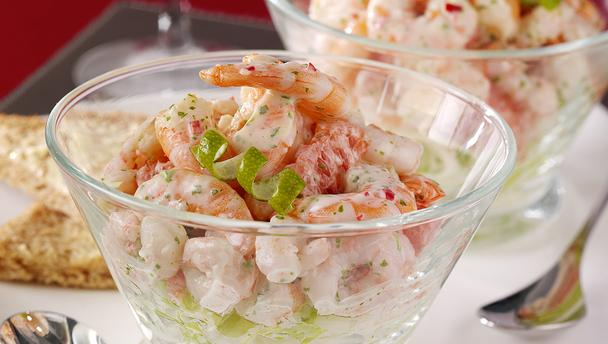

<!--create new ion view and content -->
<ion-view>
<ion-content class="foodpage">

 <br/>
 <br/><!--line breaks-->

 <!--header bar-->
 <div class="bar bar-header bar-stable">
  <h1 class="title"><b>Prawn Cocktail</b></h1>
 </div>

<!--div contain image of the food and css styling-->
   <div>
  
 </div>
 
 <!--div with preformatted text and css ctyling to hold the foods ingredients-->
 <div class="foodcontent">
  <pre><!--preformatted text tag-->
 <b> Ingredients</b>
225g shelled prawns (keep 4 prawns for garnish)
8 level tablespoons tomato ketchup or chutney
¼ pint double cream or mayonnaise
1 level dessertspoon horseradish
1 tsp Worcestershire sauce or a few drops Tabasco
A squeeze of lemon juice                 <!--ingredients-->
4 tablespoons finely shredded lettuce, such as iceberg or gem
4 thin slices of lemon
  </pre>
 </div>

 <!--create new button with styling that links to the home page/template-->
 <div>
  <button class="button button-royal" ui-sref="tabs.home">
    Back to home<!--text for button-->
  </button>
 </div>
 
  <!--Form controlled with radio buttons containing different calory sizes for portions, using controller-->
 <div class="list"><!--create a new list-->

  <label class="item item-radio"><!--new radio button with ng-model-->
    <input type="radio" name="group" ng-model="portion.size" value="150">
    <div class="item-content">
      Small Portion<!--text inside the button-->
    </div>
    <i class="radio-icon ion-checkmark"></i>
  </label>

  <!--second radio button-->
  <label class="item item-radio">
    <input type="radio" name="group" ng-model="portion.size" value="210">
    <div class="item-content">
      Medium Portion
    </div>
    <i class="radio-icon ion-checkmark"></i>
  </label>

<!--value displays the outputted value when clicked-->
   <label class="item item-radio">
    <input type="radio" name="group" ng-model="portion.size" value="320">
    <div class="item-content">
      Large Portion
    </div>
    <i class="radio-icon ion-checkmark"></i>
<b><tt>CALORIES: {{portion.size | json }}</tt></b><br/><!--output with controller-->
  </label><!--last radio button closing-->

 </div><!--closing tag for list div-->
</ion-content>
</ion-view><!--close ion view and content tags-->
